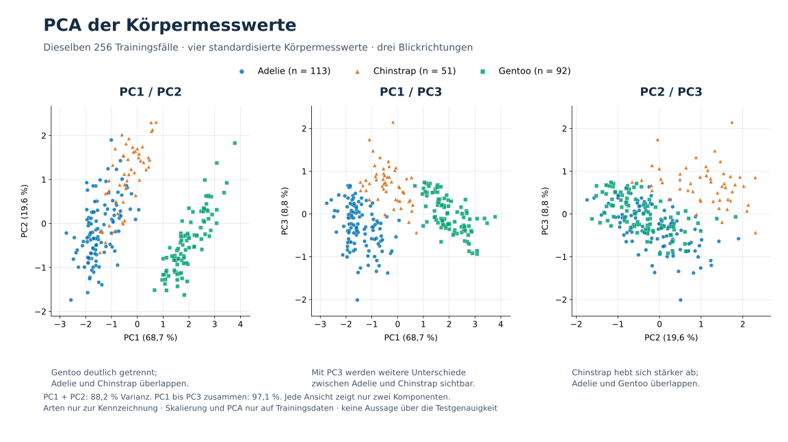
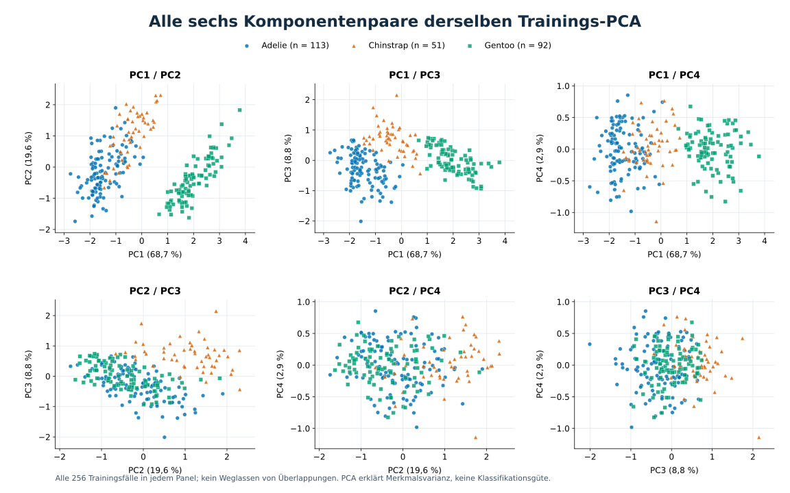

PCA und Dublettenprüfung

Warum die zusätzliche Ansicht?
PC1/PC2 zeigt vor allem die Trennung von Gentoo. Mit PC3 werden zusätzliche Unterschiede
zwischen Adelie und Chinstrap sichtbar. Auch hier bleiben Überschneidungen.
PC1: 68,7 % · PC2: 19,6 % · PC3: 8,8 % ·
PC4: 2,9 % erklärte Merkmalsvarianz. Die ersten drei Komponenten enthalten zusammen
97,1 %. Das bedeutet weder 97,1 % Accuracy noch vollständige Trennbarkeit.
Alle sechs Komponentenpaare anzeigen

Ergänzende Prüfung: keine exakten Dubletten
344 Rohzeilen · 342 vollständige Messwertzeilen · 256 Training / 86 Test
0 doppelte Rohzeilen · 0 identische Modellmerkmalskombinationen
0 gleiche Merkmalskombinationen über die Train/Test-Grenze oder innerhalb der fünf CV-Folds
Verglichen wurde in jedem CV-Fold dessen Training mit dessen Validierung.
Geprüft wurden auch die vier Messwerte ohne Geschlecht. Ähnliche Beobachtungen und andere
Formen von Datenabhängigkeit werden dadurch nicht ausgeschlossen.
Was lässt sich daraus ableiten?
Die Klassenstruktur macht hohe Klassifikationswerte plausibel.
PCA erklärt Merkmalsvarianz, keine Accuracy. Die Darstellung ist kein neuer
Gütenachweis und kein eigenständiger Test auf Overfitting.